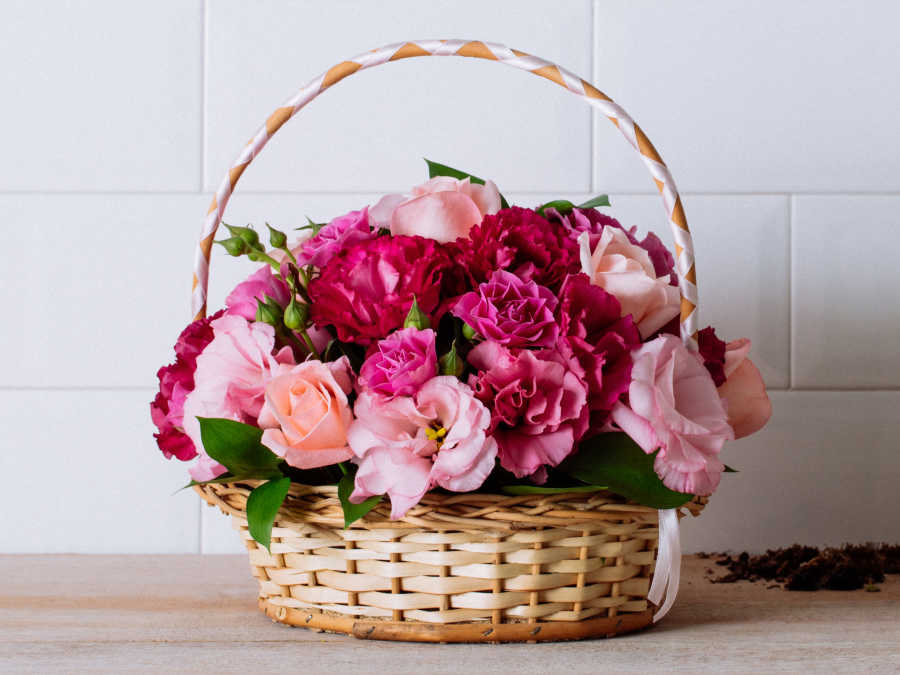
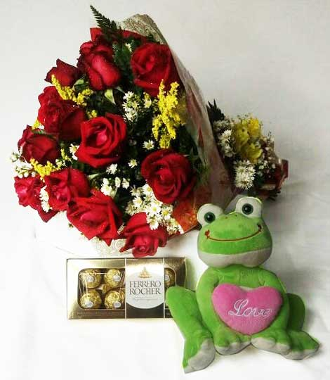

Procurando o presente perfeito?
Na Floricultura Givas você encontra arranjos exclusivos, buquês de rosas e flores frescas para todas as ocasiões. Entrega rápida e garantida.
Além das nossas flores selecionadas, criamos combinações perfeitas com chocolates finos, pelúcias e cartões personalizados para tornar o seu gesto ainda mais inesquecível. Não deixe para depois a chance de arrancar um sorriso de quem é especial para você.

Sobre a floricultura givas;
A Floricultura Givas nasceu em 1998 de uma paixão antiga pelo poder transformador da natureza. O que começou como o sonho simples de trazer mais cor e vida para o dia a dia das pessoas, logo fincou raízes profundas.
Ao longo de mais de duas décadas, evoluímos de uma pequena floricultura local para uma referência em arte floral e arranjos autorais. O mundo mudou, mas a nossa essência continua intacta: o cuidado artesanal, o frescor rigoroso das flores e o amor em cada detalhe permanecem os mesmos do primeiro dia.
Abrimos nos seguintes dias
segunda á sexta
Horário em que estamos abertos
08:00 até as 18:00
Local
Rua Pernambuco N:512
Cidade
São Tomé / PR
Por que comprar na Floricultura Givas?
Sabemos que, ao escolher um arranjo ou um presente, você não está comprando apenas flores — está enviando uma mensagem, um abraço ou um agradecimento a alguém importante. É por isso que nos dedicamos para que sua experiência seja perfeita do início ao fim.
Veja por que a Floricultura Givas é a escolha certa para os seus momentos especiais: Frescor e Qualidade Incomparáveis, Arranjos Exclusivos e Autorais, Pontualidade e Cuidado na Entrega, Tradição que Inspira Confiança.
Faça seu pedido de flores / buques / cestas dentre outras
Preencha seus dados para solicitar seu pedido. O cadastro é simples e rápido.
Informe seus dados corretamente para confirmar seu pedido. Após o preenchimento, seu pedido poderá ser validada pela equipe de atendimento.
Campos esperados
- Nome completo
- Confirmar e-mail
- Telefone
Validações esperadas
- Verificar campos vazios
- Comparar e-mail e confirmar e-mail
Apos fazer seu pedido entraremos em contato por meio de whatsapp para voce realizar o pagamento.
Garanta seu pedido
Preencha o formulário abaixo.